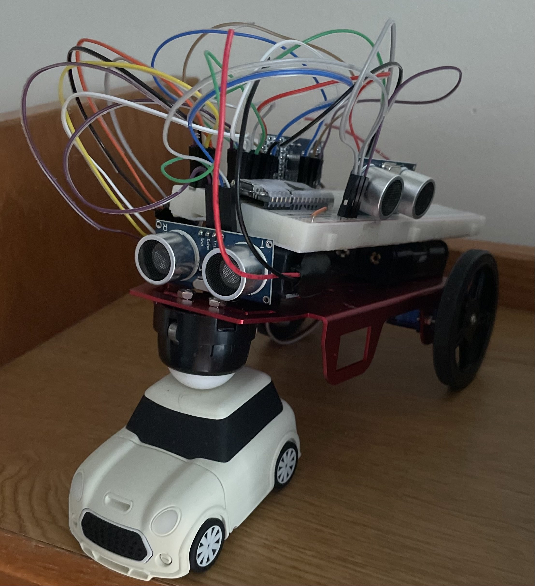

Summary
For this lab, my lab partner and I first had to attach the basic framework to the robot, attaching servo motors, wheels and batteries. The wheels that were used were caster wheel and two regular wheels. The batteries that were used were 9V battery to power the Arduino and 3 AA batteries to power our servos and Ultrasonic (US) sensors. Then we hooked up our breadboard, our Arduino Nano Every, US Sensors onto "The Robot". We wired up each components of US Sensors, servo motors and the batteries to the Arduino Nano Every using the breadboard. This final build of "The Robot" is shown in Figure 1 in the Picture Secition.
After building our robots, we programmed our arduino so that our servo motors were working properly through, checking its left and right turns. We were also able to confirm this through the exercise shown in Figure 2. We also checked if 3 US sensors were working properly checking its relatively distance. Then, finally we programmed our Arduino so that it would sucessfully go through the maze as shown in the Figure 3.
Pictures
Pictures of "The Robot" , serial monitor snippets and video from section 9 ("The Robot" going through the maze) are shown below.
Figure 1. This is the final product of building "The Robot" in Lab 1.
Figure 2. This is a video of us demontrating if the servo motors were working properly. What we looked for in this exercise was if "The Robot" was able to turn left and right in place in addition to following the directions shown below:
- Starts in place facing north, motionless
- After 5 seconds, it goes north over approximately 20 cm, then stops, still facing north.
- After 1 second, it turns to its right towards the east in place by approximately 90 degrees, then stops, facing east.
- After 1 second, it turns to its left in place by 270 degrees, then stops, facing south.
- After 1 second, it goes south over approximately 20 cm, then stops, facing south.
- After 1 second, it turns to its right by 180 degrees, then stops, facing north.
Figure 3. This is video of "The Robot" going through the maze and coming back out in one piece. "The Robot" firsts go through the maze as when it comes back out to the spot it began from it performs a 540 degree turn and stops moving. The precise directions are shown below:
- Start in position 1, immobile.
- Once you press the RESET button on the Nano, it will remain motionless for 1 second, then head North towards position 2.
- Once at position 2, it will turn smoothly in place to its left to face West, then navigate towards position 3.
- Once at position 3, it will turn smoothly in place to its left to face South, then navigate towards position 4.
- Once at position 4, it will turn smoothly in place to its right to face North, then navigate towards position 3.
- Once at position 3, it will turn smoothly in place to its right to face East, then navigate towards position 2.
- Once at position 2, it will turn smoothly in place to its right to face South, then navigate towards position 1.
- Once at position 1, it will turn smoothly in place to its left 540 degrees (1 ½ turns) ending facing North where it will remain in place stationary.
Figure 4. This is video of the serial monitor. This video shows proof that the robot acquires data from the Ultrasonic Sensors and executes based on it.
Reflection/ Final Thoughts
In preparation for the next lab, I would probably try to make the wiring a bit more organized and also I would try to fix up the wheels because it does seem a bit wobbly.